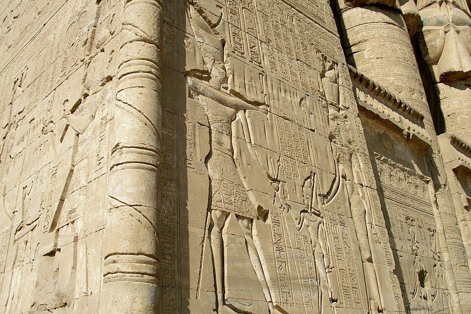

Кто такая Хатор
Хатор — одна из самых «долгоживущих» и любимых богинь Египта: почитается с раннединастических времён (её образ — корова с солнечным диском — на палетке Нармера, ~3100 до н. э.) и до самого конца язычества. Имя читают как «владычица дома Хора»: небесная корова, вскормившая царя-Хора (впрочем, с этим именем связан и мотив «вместилища Хора» — небо). Функции широки, как небо: любовь и нежность, музыка и танец, опьяняющая радость, женственность и материнство, «золото и бирюза» — хозяйка рудников.
Как «Дама Запада» (запад — страна мёртвых) Хатор встречает умерших как мать: «я — Хатор, владычица сикоморы»: сикомора (инжир), чьё изображение пишут на крышках гробов, — богиня в образе дерева выносит умершему хлеб и воду вечной жизни. Отсюда — сотни «сикоморных Хатор» в фиванских гробницах.
Мифы: око и дальняя богиня
Хатор — одно из око Ра: в мифе «возвращения дальней богини» (по «Книге Небесной Коровы») око-львица уходит в пустыню и грозя истребить людей, а бог Хонсу (или Шу, или Тот) выманивает её песнями и вином; умытая и упившаяся, она возвращается «золотой Хатор» — гнев обернулся лаской. Отсюда её эпитет «золотая» (Нубет?) и парность с Сехмет: та же сила, другой режим.
В мифе о небесной корове Хатор выносит Ра на небо: люди просят отдернуть их от взгляда Ра, и богиня-корова поднимает солнце на рогах — так «око» стало небом. Этим объясняют и «глаз Хора/Ра», и сопричастность Хатор солнцу: «око Ра, Хатор, сильная».
Культ: Дендера, Сина, праздник пьяного
Главный храм — Дендера (Хат-Хор, «дом Хатор») на западном берегу близ Луксора — нынешний построен в I в. до н. э. (вот почему он такой «римский» по сохранности): на крыше — часовни Нового года и «Красивое свидание» — ежегодная встреча Хатор с Хором Эдфу; в храме — famous «дендерский зодиак» (копия — в Лувре) и подземные крипты с систрами и мистериями. В Синае (Вади-Магхара, Серабит-эль-Хадим — «Хатор, владелица бирюзы») её скальные храмы хранили экспедиции за камнем; Экспедиции за бирюзой на Синай ходили с I династий.
«Праздник опьянения» (конец года) и «Праздник Долины» в Фивах: процессии Хатор — систрами, танцами и вином; музыкантки и «госпожи систра» — жрицы Хатор, чей ансамбль был «музыкальным колледжем» культа. На Севере её ближайшая функциональная родственница — Фрейя: любовь, золото, песни, и — связь с мёртвыми: сравнение.